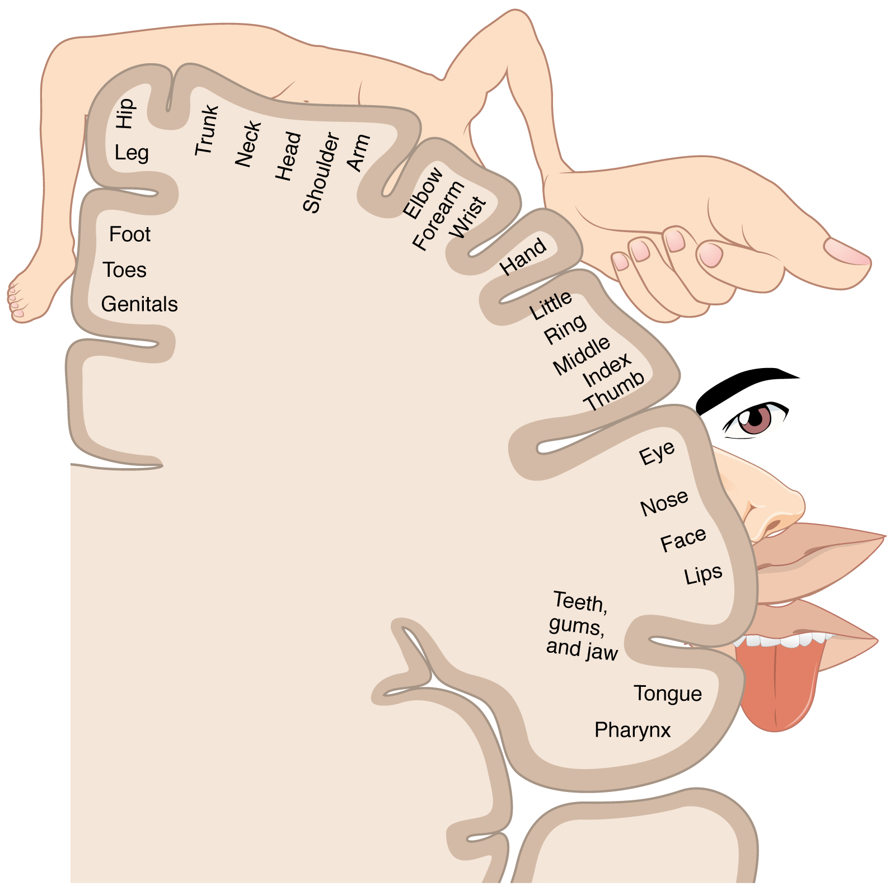

DX.7 — Infarctus cérébral ou accident ischémique transitoire sensitif 🚩 E1
1. Définition
L'European Stroke Organisation (ESO) définit l'accident ischémique transitoire (AIT) par des symptômes neurologiques focaux transitoireseso-tia.
Ces symptômes sont attribués à une ischémie cérébrale ou oculaire focale, et ils durent moins de 24 heureseso-tia.
La ligne européenne retient une définition temporelle et pragmatique, applicable d'un service à l'autreeso-tia.
L'infarctus cérébral sensitif est l'ischémie aiguë dont le déficit sensitif persiste, ou dont l'image montre déjà la lésioneso-thrombo.
Le caractère sensitif décrit seulement le territoire qui se plaint, sans créer une autre maladieeso-thrombo.
La ligne de thrombolyse parle d'accident ischémique aigu, sans réserver l'indication au déficit moteureso-thrombo.
On sépare donc l'épisode déjà résolu, qui suit la filière de l'accident ischémique transitoire (AIT), du déficit encore présenteso-tia.
La Revue médicale suisse de 2022 rappelle que le diagnostic reste clinique, puis que l'image vient le sécuriserrms2022.
2. Épidémiologie (Suisse, puis Europe)
L'Observatoire suisse de la santé (Obsan) compte les attaques par les codes I60 (hémorragie méningée) à I64 (attaque non précisée)obsan.
L'indicateur suisse réunit les hospitalisations et les décès, sans se limiter aux seuls survivantsobsan.
La page mise à jour en 2024 standardise le taux sur la population européenne de 2010, méthode de calcul réviséeobsan.
Le même texte explique qu'en 2024 la population moyenne de l'année remplace le 31 décembreobsan.
Cette page ne sépare pas les attaques dont la plainte est seulement sensitive, donc ce cours ne fabrique pas ce pourcentageobsan.
Les maladies cardiovasculaires restent la première cause de décès en Suisse, et l'attaque y figure explicitementobsan.
L'attaque est aussi nommée comme la deuxième cause de démence après la maladie d'Alzheimer, d'où l'enjeu de la prévenirobsan.
Les unités cérébrovasculaires réduisent la mortalité, la gravité du handicap et l'entrée en établissement, selon ce texte suisseobsan.
En Europe, le registre des accidents ischémiques transitoires a inclus 4013 patients vus dans des filières urgenteseso-tia.
Parmi eux, 87,6 % ont cherché des soins dans les 24 heures, et 89,5 % ont vu un spécialiste dans ce délaieso-tia.
L'étude parisienne de filière rapide a suivi 1085 suspicions, et 53 % ont été examinées dans les 24 heureseso-tia.
Le risque d'attaque à 90 jours y était de 1,63 %, alors que le score faisait attendre 6,49 %eso-tia.
Cette étude de filière montre une phase au délai médian de 3 jours et une phase au délai médian de 1 joureso-tia.
Le risque à 90 jours y baisse de 10,3 % à 2,1 % lorsque la prévention commence beaucoup plus tôteso-tia.
Le rapport de risque ajusté vaut 0,20, avec un intervalle de 0,08 à 0,49, ce qui soutient la filière rapideeso-tia.
Un score d'au moins 4 s'associe à un risque d'attaque à 7 jours de 5,3 %, contre 1,8 % en dessouseso-tia.
Le rapport de cotes de cette analyse groupée est de 2,97, sur 34 études et 35867 personneseso-tia.
Ces chiffres européens décrivent l'accident ischémique transitoire (AIT) dans son ensemble, et non la seule forme sensitiveeso-tia.
3. Physiopathologie
Le message sensitif du corps croise avant d'atteindre le cortex, donc un hémisphère sent l'hémicorps opposéopenstax-hom.
La carte corticale agrandit les doigts et la face, zones plus riches en récepteursopenstax-hom.
OpenStax montre la tête et la face juste à côté des doigts, sur le versant latéral du gyrusopenstax-hom.
Les pieds et les jambes sont médiaux, dans la fissure longitudinale, puis la carte descend vers la mainopenstax-hom.
On en déduit qu'une lésion corticale latérale peut toucher la main et la face ensemble, leurs cartes se touchantopenstax-hom.
Le thalamus relaie cette carte avant le cortex, donc une ischémie thalamique peut aussi troubler l'hémicorps opposéopenstax-hom.
Cette déduction suit le trajet publié, et elle ne donne pas une fréquence que la source ne mesure pasopenstax-hom.
L'ischémie prive d'abord le tissu du débit, puis le déficit sensitif apparaît dans le territoire privéeso-thrombo.
Plus le traitement commence tôt, plus la part de tissu récupérable est grande, le bénéfice décroissant avec les heureseso-thrombo.
Dans les trois premières heures, le rapport de cotes d'un excellent résultat vaut 1,75, avec un intervalle de 1,35 à 2,27eso-thrombo.
Entre 3 et 4,5 heures, ce rapport vaut 1,26, avec un intervalle de 1,05 à 1,51, donc le bénéfice persisteeso-thrombo.
Après 4,5 heures sans sélection d'image avancée, le rapport vaut 1,15 et l'intervalle de 0,95 à 1,40 croise l'absence d'effeteso-thrombo.
Le gain absolu de résultat excellent est de 6,8 % dans les 4,5 heures, contre 2,2 % d'hémorragie mortelle en pluseso-thrombo.
Le rapport de cotes d'une hémorragie parenchymateuse de type 2 vaut 5,55, ce qui rappelle le prix du traitementeso-thrombo.
Ce prix reste inférieur au bénéfice chez le patient moyen traité dans le délai, d'où la recommandation forteeso-thrombo.
Homoncule sensitif

La figure publiée par OpenStax montre une carte en couleur, et les légendes du fichier sont en anglaisopenstax-hom.
La main, les doigts et la face occupent une large surface, celle des régions plus sensiblesopenstax-hom.
Le pied, la jambe et la hanche sont dessinés en haut et en dedans, loin de la langue et du pharynxopenstax-hom.
On lit d'abord la carte sans annotation ajoutée, puis on rattache la plainte du patient à la zone voisineopenstax-hom.
Une plainte de la main et de la bouche ensemble se comprend, et ces deux zones se touchent sur le dessinopenstax-hom.
Le schéma ne prouve pas à lui seul le mécanisme vasculaire, et l'image du patient reste nécessaireopenstax-hom.
Aucune flèche n'a été dessinée par ce cours, afin de laisser le fichier original intactopenstax-hom.
Fermer
4. Démarche diagnostique
Lorsque le déficit persiste, on écarte d'abord l'hémorragie, l'altéplase restant interdite tant que l'image ne l'a pas exclueaips-48313.
Le délai se compte depuis le dernier état asymptomatique connu, et il ne doit pas dépasser 4,5 heuresaips-48313.
Si le déficit sensitif a déjà disparu, la filière n'est plus celle de la thrombolyse, mais celle de l'accident ischémique transitoire (AIT)eso-tia.
La Revue médicale suisse recommande l'imagerie cérébrale dans les 24 heures, et le risque d'attaque suit de près l'épisoderms2022.
L'European Stroke Organisation (ESO) recommande l'avis d'un spécialiste dans les 24 heures, et cette recommandation est forte malgré une preuve faibleeso-tia.
Le score clinique ne doit pas trier à lui seul, usage que la même ligne déconseilleeso-tia.
Un score d'au moins 4 définit toutefois le haut risque pour lequel la double antiagrégation courte est recommandéeeso-tia.
La sténose artérielle d'au moins 50 % se confirme par angiographie par résonance ou par scanner, après l'échographieeso-tia.
Devant une fibrillation auriculaire, la revue suisse retient l'anticoagulation plutôt que l'antiagrégant seulrms2022.
La myélopathie cervicale se distingue par un niveau, un signe pyramidal ou un trouble de miction, et non par un hémicorps brutalrmshdc.
Le Guillain-Barré monte en général des pieds vers les mains, donc il ne mime pas l'hémicorps sensitif d'installation minuteeso-tia.
La polyneuropathie est distale et symétrique, alors que l'ischémie cérébrale sensitive respecte plutôt un hémicorps ou un segment de la carteopenstax-hom.
On distingue l'imitateur migraineux par la marche du symptôme, qui s'étale en minutes plutôt qu'en secondeseso-tia.
Une crise épileptique sensitive est souvent très brève et stéréotypée, ce qui s'éloigne de l'accident ischémique transitoire (AIT)eso-tia.
Une hypoglycémie se corrige et se mesure, et elle ne se conclut pas comme une ischémie sans cette vérificationeso-tia.
Une aura visuelle isolée se décrit dans le champ visuel, et non comme un hémicorps cutanéopenstax-hom.
Le patient raconte l'ordre d'apparition, qui sépare la carte vasculaire d'une marche migraineuseopenstax-hom.
On demande les médicaments du jour, parce qu'un anticoagulant change le risque avant même l'imageaips-48313.
Une chute récente ou une chirurgie récente se notent, afin d'éclairer le risque hémorragiqueaips-48313.
Le récit d'un témoin fixe l'heure du dernier état normal lorsque le patient ne peut plus la donneraips-48313.
5. Anamnèse ciblée et drapeaux rouges
On demande l'heure du dernier état normal, le délai de 4,5 heures décidant de l'altéplase si le déficit dure encoreaips-48313.
On fait décrire le siège, le type et la marche du trouble, la carte corticale reliant le lieu à la lésionopenstax-hom.
Une installation en quelques secondes oriente vers l'ischémie, tandis qu'une ascension sur plusieurs jours oriente vers une autre maladieeso-tia.
On cherche une faiblesse ou un trouble du langage associés, qui comptent dans le score et dans la gravitéeso-tia.
Le score donne 2 points à la faiblesse et 1 point au trouble du langage, lorsque l'un ou l'autre est présenteso-tia.
Une durée d'au moins 60 minutes représente 2 points, alors qu'une durée d'au moins 10 minutes en représente 1eso-tia.
L'âge d'au moins 60 ans représente 1 point, de même qu'un diabète connu et une pression d'au moins 140 sur 90eso-tia.
Le total va de 0 à 7, mais la ligne européenne refuse d'en faire l'unique outil de trieso-tia.
Des épisodes répétés dans la même journée sont un haut risque clinique, même lorsque le score paraît modesteeso-tia.
Une céphalée brutale inhabituelle impose d'écarter l'hémorragie avant toute antiagrégation, le tableau pouvant ne pas être ischémiqueaips-48313.
Un trouble de la miction avec un signe de moelle déplace l'urgence vers le rachis cervical, selon la revue de 2015rmshdc.
La prise d'un anticoagulant ou une chute récente se demandent avant l'image, parce qu'elles changent le risque hémorragiqueaips-48313.
Drapeaux rouges et action
Un déficit encore présent dans les 4,5 heures impose l'image immédiate, l'hémorragie devant être exclueaips-48313.
Un épisode déjà fini impose quand même la filière des 24 heures, où le risque d'attaque est précoceeso-tia.
Une céphalée en coup de tonnerre impose d'arrêter l'antiagrégant tant que l'hémorragie n'est pas écartéeaips-48313.
Un trouble de miction associé à un signe de moelle déplace l'image vers le rachis cervicalrmshdc.
Des épisodes qui se répètent le même jour ne se rassurent pas, même si chacun dure peueso-tia.
Une pression très haute se traite selon la filière locale, et ce cours ne fixe pas un seuil qui n'a pas été relueso-tia.
Fermer
On fait répéter le type de la paresthésie : fourmillement, engourdissement ou douleur ne se valent pasopenstax-hom.
On demande si le trouble a touché la face, la main, le tronc ou le pied, dans cet ordreopenstax-hom.
On cherche un facteur déclenchant comme l'effort ou la position du cou, qui orientent hors de l'hémisphèrermshdc.
Une plainte qui dépend de la rotation du cou se rapproche de la racine ou de la moellermshdc.
On note les épisodes des jours précédents, leur répétition augmentant le risque même sans score élevéeso-tia.
Le patient dit s'il peut encore boutonner, écrire ou sentir le sol, afin de juger le handicap réelopenstax-hom.
Une céphalée habituelle, identique aux migraines anciennes, se distingue d'une céphalée nouvelle et brutaleeso-tia.
On interroge l'entourage sur un trouble du langage passé inaperçu, qui change le scoreeso-tia.
6. Examen physique ciblé, région par région
L'examen sensitif doit comparer le côté malade au côté sain, l'hémisphère ne recevant que l'hémicorps opposéopenstax-hom.
On commence par la vigilance et le langage, afin de ne pas manquer une atteinte plus large que la sensibilitéeso-thrombo.
Le tact, la piqûre, le froid, la vibration et la position se testent chacun, parce qu'ils ne voyagent pas ensembleopenstax-hom.
L'extinction se cherche en stimulant les deux côtés ensemble, et une lésion pariétale peut effacer un stimulus pourtant perçu seulopenstax-hom.
La stéréognosie et la graphesthésie se testent dans la main, les yeux fermés, lorsque le tact élémentaire est conservéopenstax-hom.
Un déficit qui coupe net au menton et épargne le cou évoque un trajet cérébral, et non un nerf périphériqueopenstax-hom.
Au membre supérieur, on compare l'épaule, l'avant-bras et les doigts, auxquels la carte corticale ne donne pas la même surfaceopenstax-hom.
À la main, une atteinte des doigts avec la bouche voisine se lit sur l'homoncule, où ces zones se touchentopenstax-hom.
Au tronc, un niveau horizontal net, que la carte hémisphérique ne trace pas, fait quitter l'hypothèse cérébraleopenstax-hom.
Au membre inférieur, on teste le pied et la jambe, puis on les compare au membre supérieur du même côtéopenstax-hom.
La marche et l'équilibre se regardent debout, parce qu'un trouble de position peut n'apparaître que lorsque la vue ne compense plusopenstax-hom.
Les réflexes et le cutané plantaire se notent, afin de ne pas laisser passer un signe pyramidal qui changerait le rangrmshdc.
Examen de la face
On demande au patient de fermer les yeux, puis on compare le tact des deux joues avec le même contactopenstax-hom.
La piqûre et le froid se testent sur le front, la joue et le menton, trois territoires distinctsopenstax-hom.
On regarde si le trouble s'arrête au menton, parce qu'un nerf périphérique dépasse parfois cette limiteopenstax-hom.
La cornée ne se teste pas de façon appuyée, afin de ne pas blesser un œil dont la sensibilité est déjà douteuseopenstax-hom.
Un déficit facial sensitif avec la main du même côté se relit sur l'homoncule, où ces cartes sont voisinesopenstax-hom.
On note en même temps la motricité de la face, où un déficit moteur change la gravité et le scoreeso-tia.
Fermer
Examen du membre supérieur
On compare l'épaule, l'avant-bras et la pulpe des doigts, toujours du côté sain vers le côté plaintifopenstax-hom.
La vibration se cherche à l'index et au poignet avec le même diapason, les yeux fermésopenstax-hom.
La position du doigt se teste par petits déplacements, et l'on demande haut ou bas sans laisser voir le gesteopenstax-hom.
La stéréognosie utilise un objet familier dans la main, seulement si le tact élémentaire est encore perçuopenstax-hom.
L'extinction se cherche en touchant les deux mains ensemble, après avoir vérifié que chaque main sent le contact seulopenstax-hom.
Un gant qui monte jusqu'au coude sans suivre un nerf ni un hémicorps doit faire chercher une autre causeopenstax-hom.
Fermer
Examen du tronc
On descend la piqûre de la joue vers le thorax, afin de voir si une limite horizontale apparaîtopenstax-moelle.
Une limite nette autour du thorax n'appartient pas à la carte d'un hémisphère, et elle oriente vers la moelleopenstax-moelle.
On compare les deux côtés à la même hauteur, où une différence unilatérale reste compatible avec une lésion cérébraleopenstax-hom.
Le patient dit le changement de qualité, et l'on ne se contente pas d'un hochement de têteopenstax-hom.
On note l'endroit exact de la limite, afin que l'image éventuelle de la moelle vise le bon étagermshdc.
Fermer
Examen du membre inférieur
Le tact et la piqûre se comparent sur la cuisse, la jambe et le dos du piedopenstax-hom.
La vibration se teste à la malléole, puis plus haut si elle manque en basopenstax-hom.
La position du gros orteil se demande les yeux fermés, par petits mouvements tenus un instantopenstax-hom.
Un trouble des deux pieds, sans hémicorps, oriente davantage vers une neuropathie que vers une carte corticaleopenstax-hom.
On fait marcher le patient quelques pas, le déséquilibre révélant un trouble de position que le lit cachaitopenstax-hom.
Les réflexes achilléens se comparent, afin de ne pas manquer une atteinte périphérique associéeopenstax-hom.
Fermer
Marche, neglect et coordination
On observe le démarrage, le demi-tour et l'arrêt, trois temps qui montrent un trouble que la table d'examen rateopenstax-hom.
La fermeture des yeux debout se fait près d'un appui, afin de voir l'effet de la perte visuelle sans chuteopenstax-hom.
L'extinction visuelle ou sensitive du côté opposé à une lésion pariétale se cherche par doubles stimulationsopenstax-hom.
On demande de reconnaître un chiffre tracé dans la paume, seulement lorsque le tact simple est conservéopenstax-hom.
Un trouble moteur du même hémicorps se cote, parce qu'il entre dans le score et dans l'urgenceeso-tia.
La coordination doigt-nez se regarde, afin de ne pas attribuer à la sensibilité une maladresse cérébelleuseopenstax-hom.
Fermer
Le tact se teste avec un contact léger et identique, et non avec un frottement appuyé qui mélange les sensationsopenstax-hom.
La piqûre utilise une pointe à usage unique, et l'on jette l'aiguille après le patientopenstax-hom.
Le froid se teste avec un objet métallique, en comparant tout de suite le côté sainopenstax-hom.
On laisse le patient répondre par un mot, plus chaud, plus pointu ou égal, plutôt que par un geste vagueopenstax-hom.
Si le patient fatigue, on raccourcit l'examen aux zones qui décideront, sans prétendre avoir tout cartographiéopenstax-hom.
On écrit le résultat en regardant le patient, afin que la trace reste lisible pour le collègue de gardeeso-tia.
Un examen normal après un épisode résolu ne peut pas rassurer à lui seul, et l'accident ischémique transitoire (AIT) ne laisse pas toujours de signeeso-tia.
La comparaison au côté sain se répète à chaque modalité, sinon une différence fine disparaîtopenstax-hom.
On note la température de la pièce quand des mains froides rendent la comparaison du tact moins fiableopenstax-hom.
On réchauffe le métal du test au froid entre deux territoires, afin que le stimulus reste comparableopenstax-hom.
Le patient ne doit pas voir le côté stimulé, sinon il devine et le test perd son sensopenstax-hom.
On alterne les questions vraies et les stimulations factices, pour reconnaître une réponse automatiqueopenstax-hom.
Une hypoesthésie qui change de frontière d'une minute à l'autre se réexamine quand la fatigue fausse la carteopenstax-hom.
On résume à voix haute la carte trouvée, et le patient corrige si le territoire n'est pas le sienopenstax-hom.
Le schéma de l'homoncule sert à formuler l'hypothèse, puis l'image du jour la confirme ou la retireopenstax-hom.
Un trouble bilatéral strictement distal ne se force pas dans cette carte hémisphériqueopenstax-hom.
7. Approche syndromique
Le syndrome cortical sensitif touche la carte de l'hémicorps opposé, et il peut altérer la reconnaissance des objets dans la mainopenstax-hom.
Le syndrome thalamique sensitif trouble l'hémicorps opposé, souvent de façon dense, et le relais est compact avant le cortexopenstax-hom.
Cette formulation est une lecture du trajet, et non une fréquence mesurée par les sources lues pour ce coursopenstax-hom.
Le syndrome sous-cortical limité peut ne prendre qu'une partie de la carte, selon le territoire privé de débitopenstax-hom.
L'accident ischémique transitoire (AIT) sensitif a le même siège possible, mais les symptômes ont disparu avant 24 heureseso-tia.
Si l'image de diffusion montre déjà une lésion, le mot d'infarctus devient plus juste, même lorsque la plainte a été brèveeso-thrombo.
L'essai du réveil a inclus 503 patients dont l'ischémie était visible en diffusion sans hypersignal net en récupération d'inversion (FLAIR)eso-thrombo.
Le rapport ajusté d'excellent résultat favorisait l'altéplase dans cet essai de 503 patients sélectionnés par l'imageeso-thrombo.
Ce schéma, issu d'un essai sur un début inconnu au réveil, ne vise pas l'épisode sensitif déjà résolu et datéeso-thrombo.
Un syndrome alterne, avec une face d'un côté et le corps de l'autre, fait chercher le tronc plutôt que l'hémisphèreopenstax-hom.
Un syndrome suspendu en bande, sans hémicorps, ne suit pas la carte hémisphérique et doit faire regarder la moelleopenstax-moelle.
La douleur centrale peut apparaître après l'ischémie thalamique, et elle ne se confond pas avec la paresthésie de l'instant aiguopenstax-hom.
Lire un syndrome sensitif
Si la main et la bouche sont prises ensemble, la carte latérale du cortex devient plausibleopenstax-hom.
Si tout l'hémicorps est dense, y compris le tronc, le relais thalamique est une hypothèse à confirmer par l'imageopenstax-hom.
Si la face est atteinte d'un côté et le corps de l'autre, on pense au tronc cérébralopenstax-hom.
Si la limite est horizontale sur le thorax, on pense à la moelle et non à l'hémisphèreopenstax-moelle.
Si les deux pieds seuls sont atteints, la neuropathie distale passe devant l'infarctusopenstax-hom.
Si les symptômes ont disparu avant 24 heures, on garde le mot d'accident ischémique transitoire (AIT)eso-tia.
Fermer
8. Diagnostic positif et critères
Le diagnostic d'accident ischémique transitoire (AIT) repose sur la clinique et sur une durée inférieure à 24 heureseso-tia.
Il suppose une cause ischémique focale, cérébrale ou oculaire, après avoir écarté les imitateurs évidentseso-tia.
Le diagnostic d'infarctus sensitif repose sur un déficit lié à l'ischémie, encore présent ou déjà visible sur l'imageeso-thrombo.
L'information professionnelle de l'altéplase exige l'exclusion d'une hémorragie intracrânienne avant le traitementaips-48313.
Elle exige aussi un délai maximal de 4,5 heures depuis le dernier état asymptomatique connuaips-48313.
Le haut risque retenu pour la double antiagrégation est un score d'au moins 4, dans une forme non cardio-emboliqueeso-tia.
La ligne demande ensuite le retour à une seule antiagrégation, le bénéfice net ne se prolongeant pas indéfinimenteso-tia.
La fenêtre utile de cette double traitement se situe entre 10 et 21 jours, selon la synthèse européenneeso-tia.
Neuf experts sur neuf déconseillent la double antiagrégation lorsque le risque est bas ou le diagnostic incertaineso-tia.
Une sténose d'au moins 50 % doit être confirmée par une seconde méthode angiographique si elle change la conduiteeso-tia.
Aucun de ces critères n'exige un déficit moteur, donc une plainte sensitive vraie n'est pas exclue par principeeso-thrombo.
Le score seul ne suffit pas à classer le patient, et l'avis spécialisé dans les 24 heures reste recommandéeso-tia.
Il ne suffit pas que le patient dise « ça va mieux » pour effacer un déficit encore mesurableeso-thrombo.
Il ne suffit pas non plus qu'une image soit normale pour nier un épisode clinique typique et brefeso-tia.
Le diagnostic reste probabiliste au début, et il se durcit lorsque l'image ou le rythme cardiaque trancherms2022.
On écrit ce qui manque encore, le rythme prolongé ou l'artère, afin que la filière ne s'arrête pas trop tôteso-tia.
Une cause cardio-embolique exclut le schéma de double antiagrégation prévu pour la forme non cardio-emboliqueeso-tia.
Une sténose douteuse à un seul examen ne se traite pas comme une sténose confirméeeso-tia.
9. Examens complémentaires
L'image cérébrale est indispensable, et la Revue médicale suisse de 2022 demande qu'elle soit faite dans les 24 heuresrms2022.
Lorsque le déficit persiste et que le délai est court, l'image sert d'abord à exclure l'hémorragieaips-48313.
La tomodensitométrie (TDM) sans injection est l'examen le plus souvent disponible en urgence pour cette exclusioneso-thrombo.
L'imagerie par résonance magnétique (IRM) en diffusion voit l'ischémie plus tôt, et elle aide lorsque la tomodensitométrie (TDM) est encore normaleeso-thrombo.
Au réveil, la diffusion sans hypersignal net en récupération d'inversion (FLAIR) a servi à sélectionner 503 patientseso-thrombo.
Le bilan vasculaire cherche une sténose d'au moins 50 %, d'abord par échographie, puis par angiographie si cela guide le gesteeso-tia.
Le bilan cardiaque doit rechercher une fibrillation, que la revue suisse fait suivre d'un anticoagulantrms2022.
On écarte d'abord une autre cause évidente, et l'altéplase ne s'adresse qu'à l'ischémie après exclusion de l'hémorragieaips-48313.
Il n'existe pas, dans les sources lues, un seuil de laboratoire propre à la forme seulement sensitiveeso-tia.
Un électrocardiogramme se fait dès l'arrivée, le mécanisme cardio-embolique retirant l'indication de la double antiagrégationeso-tia.
Si un signe de moelle est présent, l'image du rachis cervical passe avant le reste du bilan sensitifrmshdc.
L'image de diffusion précise l'ischémie lorsque la tomodensitométrie (TDM) du premier jour reste encore peu parlanteeso-thrombo.
On demande l'image avec la question clinique en une phrase, afin que le radiologue sache ce qu'il doit exclureaips-48313.
On relit soi-même l'image avec le compte rendu, où une discordance se discute avant la sortieeso-thrombo.
La diffusion se compare à la carte clinique, et une lésion du mauvais côté remet le diagnostic en questionopenstax-hom.
Un artefact de mouvement ne se lit pas comme une ischémie, et l'on refait la séquence si le doute persisteeso-thrombo.
Le rythme se surveille assez longtemps pour chercher une fibrillation paroxystique, selon le bilan cardiaque demandé par la revuerms2022.
On n'attend pas ce rythme pour donner l'antiagrégant si l'hémorragie est déjà écartée et qu'aucune fibrillation n'est connuerms2022.
Le compte rendu doit décrire le côté de la lésion, qui doit correspondre à l'hémicorps plaintifopenstax-hom.
Une lésion du mauvais côté doit faire revoir le diagnostic, plutôt que de forcer l'histoireopenstax-hom.
Le radiologue doit connaître l'heure du début, afin de choisir la séquence utileeso-thrombo.
On doit relire la diffusion avec la clinique, et non la ranger sans la compareropenstax-hom.
Une image normale doit rester compatible avec un accident ischémique transitoire (AIT) déjà résolueso-tia.
Le rythme cardiaque, que la revue suisse place dans le bilan, doit être cherchérms2022.
Une fibrillation découverte doit changer la prévention, et la double antiagrégation doit s'arrêterrms2022.
Le dossier doit garder la question posée à l'image, afin que la réponse soit jugée sur cette questionaips-48313.
10. Arbre décisionnel
Si le déficit sensitif persiste et que le dernier état normal a moins de 4,5 heures, on image pour exclure l'hémorragieaips-48313.
Si l'hémorragie est exclue et que l'indication d'altéplase est retenue, le traitement commence sans attendre un déficit moteuraips-48313.
Si le déficit a disparu, on n'administre pas l'altéplase, et l'on organise l'avis spécialisé dans les 24 heureseso-tia.
Si le score atteint 4 ou plus et que la cause n'est pas cardio-embolique, la double antiagrégation courte est recommandéeeso-tia.
Si le score est plus bas, l'outil ne suffit pas pour renvoyer le patient sur ce seul chiffreeso-tia.
Si la sténose symptomatique est confirmée, la recanalisation se discute selon la revue suisse de 2022rms2022.
Si une fibrillation est prouvée, l'anticoagulation remplace le schéma antiagrégant de la forme non cardio-emboliquerms2022.
Si un niveau sensitif ou un trouble de miction apparaît, on quitte cet arbre et l'on image la moelle cervicalermshdc.
Si le début est inconnu au réveil, la sélection par diffusion et récupération d'inversion (FLAIR) se discute, comme dans l'essai de 503 patientseso-thrombo.
Si l'image montre une large occlusion accessible, la thrombectomie se discute en plus, mais ce cours ne fixe pas un délai qui n'a pas été relu icieso-thrombo.
Si l'heure de début est incertaine et que le déficit persiste, on ne devine pas un délai favorableaips-48313.
Si le patient se réveille avec le déficit, le dernier état normal est le coucher, sauf témoin contraireeso-thrombo.
Si deux territoires artériels sont pris en même temps, on cherche une source cardiaque plus activementrms2022.
Si le déficit fluctue encore dans la première heure, on reste sur place et l'on ne renvoie paseso-tia.
Si la famille refuse l'image, on explique le risque d'hémorragie méconnue avant tout antithrombotiqueaips-48313.
Si l'altéplase est commencée, la surveillance neurologique se répète, et un malaise nouveau relance l'imageeso-thrombo.
11. Prise en charge
Le but immédiat est d'éviter l'attaque des jours suivants, le risque à 7 jours atteignant 5,3 % lorsque le score est d'au moins 4eso-tia.
Le second but, si le déficit dure, est le résultat excellent, dont le gain absolu vaut 6,8 % dans les 4,5 heureseso-thrombo.
L'information professionnelle fixe l'altéplase à 0,9 mg par kilogramme, sans dépasser 90 mgaips-48313.
Dix pour cent de la dose partent en bolus, puis le reste perfuse en 60 minutes, selon la même ficheaips-48313.
Le traitement est réservé aux médecins habitués à la thrombolyse et capables d'en surveiller les complicationsaips-48313.
Chez l'adulte et chez l'enfant d'au moins 16 ans, la fiche autorise ce schéma dans le délai de 4,5 heuresaips-48313.
Aspirine Cardio, pour un stade précurseur, se prescrit à 100 mg trois fois par jour ou à 300 mg une foisaips-51795.
Les comprimés gastro-résistants ne doivent pas être écrasés, coupés ni croqués, l'enrobage devant atteindre l'intestinaips-51795.
La dose de 200 à 300 mg écrasée est écrite pour l'infarctus aigu du myocarde, et non pour l'attaque cérébraleaips-51795.
On ne transpose donc pas ce schéma cardiaque à l'ischémie cérébrale, faute d'une phrase d'information professionnelle qui le diraitaips-51795.
Plavix se prend à 75 mg une fois par jour pour la prévention des accidents ischémiquesaips-70367.
Cette indication nomme un accident datant de 7 jours à environ 6 mois, donc elle ne couvre pas la première semaineaips-70367.
La charge de 300 mg écrite dans la même fiche concerne le syndrome coronaire aigu, et non l'attaque sensitiveaips-70367.
L'essai cité par la ligne européenne utilisait pourtant une charge de 300 mg puis 75 mg, ce qui est hors AIPS (information professionnelle suisse)eso-tia.
Cette divergence se dit au patient comme dans le dossier, où la fiche suisse et l'essai ne portent pas la même phraseeso-tia.
La double antiagrégation recommandée reste courte, entre 10 et 21 jours, puis un seul antiagrégant continueeso-tia.
L'atorvastatine commence d'habitude à 10 mg une fois par jour, et la dose maximale de la fiche est de 80 mgaips-61285.
Les études de prévention primaire citées dans la fiche ont évalué 10 mg, et non une dose imposée après l'attaqueaips-61285.
On n'invente donc pas ici une dose obligatoire de haute intensité qui ne figure pas dans l'information professionnelle lueaips-61285.
Après 70 ans, la fiche décrit une expérience jusqu'à 80 mg par jour, avec la même tolérance qu'ailleursaips-61285.
L'héparine intraveineuse et l'antiagrégant restent mal étudiés ensemble dans les 24 premières heures après l'altéplaseaips-48313.
La fiche interdit donc de les ajouter d'emblée pendant ces 24 heures, faute de données suffisantesaips-48313.
La surveillance cherche l'hémorragie, le déficit qui s'aggrave et la récidive, le rapport de cotes d'hémorragie grave valant 5,55eso-thrombo.
On revoit le patient dans la filière spécialisée, et l'on ne se contente pas d'un contrôle tardif de plusieurs semaineseso-tia.
Le pronostic s'améliore lorsque la prévention commence tôt, puisque le risque à 90 jours est tombé de 10,3 % à 2,1 %eso-tia.
La sortie se décide lorsque l'hémorragie est écartée, le mécanisme est engagé et le déficit ne progresse pluseso-thrombo.
Un déficit sensitif isolé et résolu peut sortir après la filière des 24 heures, si le traitement de prévention est commencérms2022.
Urgence, conduite chronologique
Dès la première minute, on note l'heure du dernier état normal et l'on sécurise la ventilationaips-48313.
Dans les minutes suivantes, on mesure la pression et la glycémie selon la filière locale, sans retarder l'imageeso-tia.
Si le déficit persiste, l'image cérébrale part immédiatement, et l'hémorragie doit être exclue avant l'altéplaseaips-48313.
Si l'image écarte l'hémorragie et que le délai est inférieur à 4,5 heures, l'altéplase se discute aussitôtaips-48313.
La dose suit la fiche, à 0,9 mg par kilogramme sans dépasser 90 mg, sous surveillance habituéeaips-48313.
Si le déficit a déjà disparu, on n'attend pas la semaine, et l'avis spécialisé se prend dans les 24 heureseso-tia.
L'antiagrégation de prévention commence lorsque l'hémorragie est écartée, et non avant cette imageaips-48313.
La double antiagrégation courte ne se décide qu'après avoir écarté une cause cardio-emboliqueeso-tia.
Fermer
Fiche Aspirine Cardio
La fiche d'Aspirine Cardio sépare le stade précurseur cérébral de l'infarctus du myocarde, dont les doses écrites diffèrentaips-51795.
Pour un stade précurseur, la fiche retient 100 mg trois fois par jour ou 300 mg une seule foisaips-51795.
Les comprimés ne s'écrasent pas, l'enrobage devant libérer le principe dans l'intestinaips-51795.
La clairance de la créatinine inférieure à 30 ml/min fait partie des contre-indications écritesaips-51795.
Un ulcère gastroduodénal actif ou une hémorragie digestive contre-indiquent aussi cette spécialitéaips-51795.
Avant 18 ans, la fiche dit de ne pas utiliser Aspirine Cardio, faute de donnéesaips-51795.
| Rubrique | Texte de l'information professionnelle. |
|---|---|
| Grossesse. | Pendant le premier et le deuxième trimestre de la grossesse, l'acide acétylsalicylique ne doit être administré qu'en cas de nécessité absolue. L'acide acétylsalicylique est contre-indiqué au cours du troisième trimestre de la grossesse.aips-51795 |
| Allaitement. | Au cours de l'allaitement, prescrire Aspirine Cardio seulement en cas d'indication impérative, le sevrage est nécessaire lors de l'emploi régulier de hautes doses.aips-51795 |
Fiche Plavix
La fiche de Plavix place la prévention d'un accident ischémique à 75 mg, après un délai qu'elle écrit en joursaips-70367.
La prévention d'un accident ischémique se fait avec 75 mg une fois par jouraips-70367.
L'indication cérébrale de cette fiche commence à 7 jours et va jusqu'à environ 6 moisaips-70367.
La charge de 300 mg est écrite pour le syndrome coronaire aigu, donc elle ne se copie pas iciaips-70367.
Un accident hémorragique en phase aiguë contre-indique le clopidogrel, de même qu'un ulcère en pousséeaips-70367.
Une insuffisance hépatique sévère fait aussi partie des contre-indications de la ficheaips-70367.
| Rubrique | Texte de l'information professionnelle. |
|---|---|
| Grossesse. | Le clopidogrel sera administré au cours de la grossesse uniquement lorsque l'indication est indispensable.aips-70367 |
| Allaitement. | Pendant le traitement avec clopidogrel il ne faut pas allaiter.aips-70367 |
Fiche Actilyse
La fiche d'Actilyse fixe à la fois la dose par kilogramme et le délai maximal depuis le dernier état normalaips-48313.
La dose totale recommandée est de 0,9 mg par kilogramme, avec un maximum de 90 mgaips-48313.
Le délai maximal est de 4,5 heures après le dernier état asymptomatique connuaips-48313.
Le traitement concerne l'adulte et l'enfant d'au moins 16 ans, selon la phrase lueaips-48313.
Seuls des médecins habitués à la thrombolyse et équipés pour la surveiller doivent le prescrireaips-48313.
L'association à l'héparine intraveineuse pendant les 24 premières heures reste insuffisamment documentéeaips-48313.
| Rubrique | Texte de l'information professionnelle. |
|---|---|
| Grossesse. | On ne dispose que d'une expérience limitée concernant l'utilisation d'Actilyse chez la femme enceinte. En cas de pathologie aiguë menaçant le pronostic vital, le bénéfice attendu doit être évalué par rapport au risque potentiel.aips-48313 |
| Allaitement. | La prudence est de mise lors de l'administration d'Actilyse à une femme qui allaite. Il est nécessaire de déterminer si l'allaitement doit être interrompu pendant les premières 24 heures qui suivent l'administration d'Actilyse.aips-48313 |
Fiche atorvastatine
La fiche d'atorvastatine décrit une dose initiale et une dose maximale, sans imposer le palier d'après l'attaqueaips-61285.
La dose initiale usuelle est de 10 mg une fois par jouraips-61285.
La dose journalière maximale écrite est de 80 mg une fois par jouraips-61285.
Les études de prévention primaire citées dans la fiche ont utilisé 10 mg, et non un autre palier imposéaips-61285.
Après 70 ans, la fiche décrit une expérience jusqu'à 80 mg par jour, chez des patients déjà sélectionnésaips-61285.
Le médicament n'est pas autorisé chez l'enfant ni chez l'adolescent, selon la phrase lue dans la ficheaips-61285.
| Rubrique | Texte de l'information professionnelle. |
|---|---|
| Grossesse. | Si une patiente commence une grossesse au cours d'un traitement par atorvastatine, le médicament devra être arrêté et la patiente rendue attentive au risque existant pour le fœtus.aips-61285 |
| Allaitement. | Etant donné le risque potentiel encouru par le nourrisson, les mères sous traitement par atorvastatine doivent s'abstenir d'allaiter (voir la rubrique des contre-indications).aips-61285 |
On dit au patient le nom du médicament, la raison du choix et le signe qui doit le faire rappeleraips-51795.
On dit aussi ce que la fiche ne couvre pas, afin qu'une dose d'essai ne passe pas pour une dose autoriséeeso-tia.
La grossesse se discute avec les phrases de la fiche, sans les adoucir, avant toute poursuite prolongéeaips-51795.
L'allaitement se discute de la même façon, et l'on ne promet pas une compatibilité que la fiche refuseaips-70367.
Chez la personne âgée, on surveille le saignement et la chute, risque que l'antiagrégant ne retire pasaips-51795.
L'insuffisance rénale sévère fait revoir le choix d'Aspirine Cardio, puisque la fiche la contre-indiqueaips-51795.
On vérifie les autres anti-inflammatoires, leur association augmentant le risque digestif déjà écritaips-51795.
Un ulcère actif arrête cette spécialité, et l'on ne la reprend pas « en protégeant » sans un avis spécialiséaips-51795.
Après l'altéplase, on évite d'ajouter d'emblée un antiagrégant pendant les premières 24 heures, faute de données suffisantesaips-48313.
La rééducation commence dès que l'état neurologique le permet, afin de limiter le handicap mesuré par la marche et la maineso-thrombo.
Le retour au domicile se prépare avec quelqu'un qui peut rappeler si le déficit revienteso-tia.
On fixe le rendez-vous spécialisé avant la sortie, et non « dans le mois », le risque étant précoceeso-tia.
On écrit dans le dossier la source de chaque dose, la fiche suisse ou la ligne européenne hors AIPS (information professionnelle suisse)eso-tia.
Cette phrase évite qu'une charge d'essai soit recopiée plus tard comme si la fiche cérébrale la contenaitaips-70367.
On remet au patient le nom exact de la spécialité, les doses des autres aspirines n'étant pas interchangeablesaips-51795.
On vérifie qu'il n'écrase pas le comprimé gastro-résistant, même s'il a du mal à l'avaleraips-51795.
S'il ne peut pas avaler, on ne bricole pas la forme gastro-résistante, et l'on demande une voie prévue par une ficheaips-51795.
La surveillance après l'altéplase reste sur place, avec quelqu'un capable de reconnaître une aggravationaips-48313.
Un mal de tête nouveau sous altéplase, où l'hémorragie est le risque connu, fait recontrôler l'imageeso-thrombo.
On ne cumule pas les antiagrégants au-delà de la fenêtre courte lorsque le risque n'est pas celui qui a été étudiéeso-tia.
Le médecin traitant reçoit le mécanisme retenu, afin que la prévention ne soit pas interrompue par méconnaissancerms2022.
On indique la date de l'épisode, d'où le délai se compte, plutôt que la seule date de la consultationeso-tia.
12. Prévention
La prévention secondaire commence le jour de l'épisode, et chaque jour de retard a coûté des attaques dans l'étude EXPRESSeso-tia.
Le délai médian de la première ordonnance baisse à 1 jour dans la phase rapide de cette étude de filièreeso-tia.
On traite la pression, les lipides et le tabac, la revue suisse demandant une stratégie sur les facteurs de risquerms2022.
La fiche d'atorvastatine ne fixe pas un taux cible de cholestérol après l'attaque, donc ce cours n'en invente pasaips-61285.
Une sténose carotidienne symptomatique se discute pour une recanalisation, selon le résumé suisse de 2022rms2022.
La fibrillation conduit à l'anticoagulant, et la double antiagrégation de la forme non cardio-embolique ne s'y substitue pasrms2022.
Chez l'enfant de moins de 18 ans, Aspirine Cardio ne doit pas être utilisé, faute de données de sécuritéaips-51795.
L'atorvastatine n'est pas autorisée chez l'enfant et l'adolescent, selon l'information professionnelle lueaips-61285.
La clairance de la créatinine inférieure à 30 ml/min contre-indique Aspirine Cardio, de même qu'un ulcère actifaips-51795.
On explique l'arrêt d'un véhicule tant que le déficit ou la vigilance ne sont pas revenus, afin d'éviter un accidenteso-tia.
On revoit les facteurs de risque à chaque contact, stratégie que la revue suisse demande pour tout patientrms2022.
L'arrêt du tabac se dit explicitement, même lorsque l'antiagrégant est déjà commencérms2022.
L'activité physique reprend lorsque le déficit ne menace plus la marche, afin de ne pas ajouter une chuteeso-tia.
La famille apprend à rappeler immédiatement si un déficit revient, et le risque est concentré au débuteso-tia.
Un carnet d'heure du dernier état normal sert au prochain épisode, et il évite un délai mal comptéaips-48313.
La conduite automobile exige le retour d'une sensibilité utile à la pédale et au volanteso-tia.
La tension se suit dans le temps, sans qu'un chiffre cible inventé ne remplace la filière localerms2022.
Le cholestérol se traite selon la fiche lue, et l'on n'affiche pas un seuil absent de cette ficheaips-61285.
L'alimentation et l'activité se conseillent en plus du médicament, dans la stratégie d'ensemble que la revue décritrms2022.
On vaccine et l'on traite les infections selon le médecin traitant, sans lier ici une dose qui n'a pas été luerms2022.
Le patient apprend les signes d'alarme, déficit, trouble du langage ou cécité brève, et le numéro d'urgenceeso-tia.
Un épisode oculaire bref, voile noir d'un œil, figure dans la définition ischémique focale de la ligne européenneeso-tia.
On ne le classe pas comme un trouble bénin de la vue sans la filière des 24 heureseso-tia.
La famille garde l'heure écrite du dernier épisode, ce qui aidera si un suivant survientaips-48313.
Le patient doit connaître les signes qui doivent le faire rappeler le jour mêmeeso-tia.
La famille doit savoir que le risque est concentré au début, et non dans les mois lointainseso-tia.
Le rendez-vous spécialisé doit être pris avant la sortie, le délai recommandé y étant courteso-tia.
Le traitement doit être poursuivi jusqu'à la révision, et non arrêté dès que la peur tomberms2022.
13. Points clés
Un trouble sensitif déjà disparu se traite comme un accident ischémique transitoire (AIT), avec un avis spécialisé dans les 24 heureseso-tia.
Un déficit sensitif qui dure encore, dans les 4,5 heures, n'est pas exclu de l'altéplase par son seul caractère sensitifaips-48313.
Le score d'au moins 4 guide la double antiagrégation courte, mais il ne doit jamais trier le patient tout seuleso-tia.
La charge de 300 mg de clopidogrel écrite pour le cœur ne se copie pas sur l'attaque cérébraleaips-70367.
L'image dans les 24 heures et la prévention le jour même sont les deux gestes qui changent le risque mesurérms2022.
La fiche et la ligne européenne ne disent pas toujours la même dose, et l'on écrit la divergence au lieu de la cachereso-tia.
Un hémicorps sensitif persistant se traite comme une ischémie aiguë, avec l'image avant tout médicament qui saigneaips-48313.
14. Pièges et questions fréquentes à l'examen fédéral
Un déficit sensitif qui a complètement disparu justifie-t-il encore l'altéplase dans les 4,5 heures aips-48313?
Non. L'épisode déjà résolu suit la filière de l'accident ischémique transitoire (AIT) selon la ligne européenne, qui réserve la thrombolyse à l'ischémie aiguë encore présenteeso-tia.
Le délai seul ne crée pas l'indication lorsque le déficit n'est plus là, et la prévention rapide prend le relaiseso-tia.
Un score inférieur à 4 permet-il de renvoyer le patient sans avis spécialisé le jour même eso-tia?
Non. L'avis dans les 24 heures reste recommandé selon la ligne européenne, qui déconseille l'usage isolé du scoreeso-tia.
Le risque n'est pas nul sous le seuil, puisqu'il reste de 1,8 % à 7 jours dans l'analyse groupéeeso-tia.
La charge de 300 mg de clopidogrel du syndrome coronaire s'applique-t-elle à l'attaque sensitive aips-70367?
Non. La prévention cérébrale selon la fiche est de 75 mg, tandis que cette charge reste écrite pour le syndrome coronaireaips-70367.
L'essai européen a utilisé une charge, mais cette phrase est hors AIPS et ne remplace pas la fiche suisse sans le direeso-tia.
Faut-il écraser Aspirine Cardio pour obtenir une absorption rapide à la phase aiguë aips-51795?
Non. Le comprimé gastro-résistant ne doit pas être écrasé selon la fiche, dont la dose écrasée vise l'infarctus du myocardeaips-51795.
Pour le stade précurseur cérébral, la fiche retient 100 mg trois fois par jour ou 300 mg une fois, sans écraseraips-51795.
Une plainte seulement sensitive, encore présente dans les 4,5 heures, écarte-t-elle l'altéplase aips-48313?
Non. Un déficit moteur n'est pas exigé par l'information professionnelle, qui indique l'accident ischémique aigu après exclusion de l'hémorragieaips-48313.
Le caractère sensitif décrit le territoire, et il ne constitue pas à lui seul une contre-indication lue dans la ficheaips-48313.
La double antiagrégation doit-elle se poursuivre plusieurs mois après un haut risque non cardio-embolique eso-tia?
Non. Un seul antiagrégant doit continuer ensuite selon la ligne européenne, qui situe la fin du bénéfice net entre 10 et 21 jourseso-tia.
Neuf experts sur neuf refusent en outre cette double traitement lorsque le risque est bas ou le diagnostic douteuxeso-tia.
L'imagerie peut-elle attendre la semaine suivante si l'épisode sensitif n'a duré que dix minutes rms2022?
Non. L'image dans les 24 heures est le délai fixé par la revue suisse, que la filière européenne vise aussieso-tia.
Le risque précoce se joue dans les premiers jours, comme le montre la chute de 10,3 % à 2,1 % lorsque la prévention est immédiateeso-tia.
Une sténose carotidienne vue seulement à l'échographie suffit-elle à poser l'indication de recanalisation eso-tia?
Non. Une sténose d'au moins 50 % se confirme par angiographie par résonance ou par scanner, selon la ligne européenneeso-tia.
La confirmation évite de traiter un pourcentage mal mesuré, et la revue suisse ne retient la recanalisation que si la sténose est symptomatiquerms2022.
Faut-il rassurer un patient dont le déficit sensitif était isolé et bref eso-tia?
Non. Ces symptômes focaux entrent dans la définition européenne, où le risque d'attaque reste celui de la filière rapideeso-tia.
L'isolement sensitif ne retire ni l'image dans les 24 heures ni l'avis spécialisérms2022.
Sources lues
- European Stroke Organisation. Guidelines on management of transient ischaemic attack. European Stroke Journal, 2021. PMC8370080. Texte lu le 15 novembre 2026. https://pmc.ncbi.nlm.nih.gov/articles/PMC8370080/
- Berge E, Whiteley W, Audebert H et coll. European Stroke Organisation guidelines on intravenous thrombolysis for acute ischaemic stroke. European Stroke Journal, 2021. PMC7995316. Lecture du 15 novembre 2026. https://pmc.ncbi.nlm.nih.gov/articles/PMC7995316/
- Lamme J, Sauvin M, Sztajzel R. Prise en charge de l'accident ischémique transitoire. Revue médicale suisse, 7 septembre 2022, numéro 794. Résumé lu le 15 novembre 2026, texte intégral réservé aux abonnés. https://www.revmed.ch/revue-medicale-suisse/2022/revue-medicale-suisse-794/prise-en-charge-de-l-accident-ischemique-transitoire
- Observatoire suisse de la santé. Indicateur Attaque cérébrale, page mise à jour le 16 décembre 2024, méthode révisée en 2024, standard européen 2010, codes I60 à I64. Consulté le 15 novembre 2026. https://ind.obsan.admin.ch/indicator/obsan/hirnschlag
- OpenStax. Anatomy and Physiology 2e, section 14.2 Central Processing, figure 14.23, homoncule sensitif. Fichier Wikimedia 1421 Sensory Homunculus, CC BY 3.0, OpenStax College, 28 mai 2013. Consulté le 15 novembre 2026. https://commons.wikimedia.org/wiki/File:1421_Sensory_Homunculus.jpg
- OpenStax. Anatomy and Physiology, 18 mai 2016, figure 1313 Spinal Cord Cross Section, CC BY 4.0. Consulté le 15 novembre 2026. https://commons.wikimedia.org/wiki/File:1313_Spinal_Cord_Cross_Section.jpg
- Schaller K. Hernie discale cervicale, diagnostic et prise en charge. Revue médicale suisse, 25 novembre 2015. Article lu le 15 novembre 2026. https://www.revmed.ch/revue-medicale-suisse/2015/revue-medicale-suisse-492/hernie-discale-cervicale-diagnostic-et-prise-en-charge
- Aspirine Cardio 100 et Aspirine Cardio 300, information professionnelle, Swissmedic 51795, mise à jour Mars 2026. https://files.refdata.ch/simis-public-prod/MedicinalDocuments/5c0d9caab7df4b4bad5c584cf5bb5fc5-fr.html
- Plavix, information professionnelle, mise à jour Septembre 2022. https://files.refdata.ch/simis-public-prod/MedicinalDocuments/ee6256bf749044049cf18c77db9e0cbe-fr.html
- Actilyse, information professionnelle, Swissmedic 48313, mise à jour Juin 2025. https://files.refdata.ch/simis-public-prod/MedicinalDocuments/6aae41fea9094666bf83bbc10c8c61e8-fr.html
- Atorvastatine Sandoz, information professionnelle, Swissmedic 61285, mise à jour Avril 2025. https://files.refdata.ch/simis-public-prod/MedicinalDocuments/d12af72b14b641c3a471b4ccc464d205-fr.html